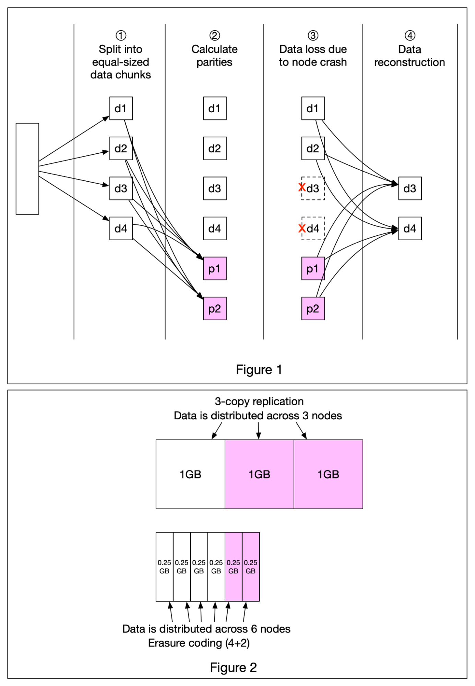

A really cool technique that’s commonly used in object storage such as S3 to improve durability is called Erasure Coding. Let’s take a look at how it works.
Erasure coding deals with data durability differently from replication. It chunks data into smaller pieces (placed on different servers) and creates parities for redundancy. In the event of failures, we can use chunk data and parities to reconstruct the data. Let’s take a look at a concrete example (4 + 2 erasure coding) as shown in Figure 1.
Data is broken up into four even-sized data chunks d1, d2, d3, and d4.
The mathematical formula is used to calculate the parities p1 and p2. To give a much simplified example, p1 = d1 + 2*d2 - d3 + 4*d4 and p2 = -d1 + 5*d2 + d3 - 3*d4.
Data d3 and d4 are lost due to node crashes.
The mathematical formula is used to reconstruct lost data d3 and d4, using the known values of d1, d2, p1, and p2.
How much extra space does erasure coding need? For every two chunks of data, we need one parity block, so the storage overhead is 50% (Figure 2). While in 3-copy replication, the storage overhead is 200% (Figure 2).
Does erasure coding increase data durability? Let’s assume a node has a 0.81% annual failure rate. According to the calculation done by Backblaze, erasure coding can achieve 11 nines durability vs 3-copy replication can achieve 6 nines durability.